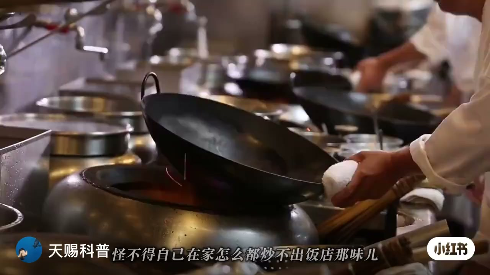
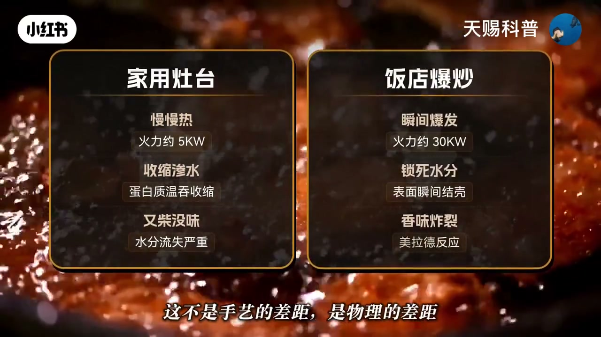
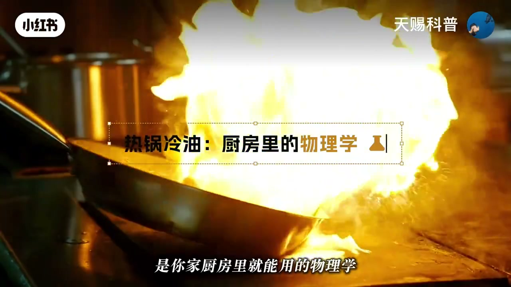
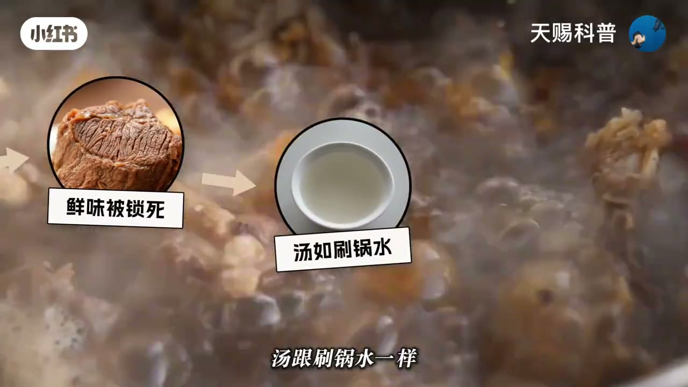
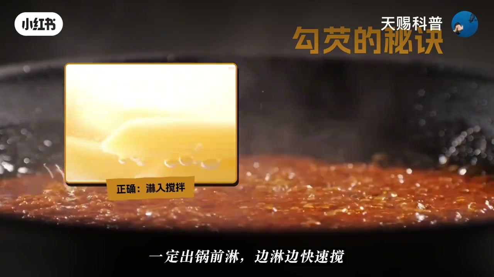

01
中文
炒不出饭店那味，不是你手艺差，是放调料的时间全反了。
EN
Your cooking isn't lacking skill — your seasoning timing is all backwards.
表达提示seasoning timing（调料时机）

Scene English · 家常菜 · 调料下锅时机科学
Why Is Your Stir-Fry All Watery? The Mistake Starts at the Burner
🎧 语音讲解
The Mistake: Timing All Backwards
情境炒不出饭店味不是手艺差，是放调料的时间全反了；大火炒时倒蚝油等于给全家炒苦味素。
炒不出饭店那味，不是你手艺差，是放调料的时间全反了。
Your cooking isn't lacking skill — your seasoning timing is all backwards.
表达提示seasoning timing（调料时机）
同样的盐、同样的酱油，放早一秒肉变柴。
Same salt, same soy sauce — one second too early and the meat turns tough.
表达提示tough（柴的）
大火炒时倒蚝油，等于给全家炒苦味素。
Adding oyster sauce on full fire is cooking bitterness into every dish.
表达提示oyster sauce（蚝油）
「时间反了」换种说法
「苦味素」换种说法

The Physics: Hot Wok, Cold Oil
情境美拉德反应需要 140 度以上；热锅冷油让锅底超 200 度，蒸汽膜带来不粘不糊的莱顿弗洛斯特效应。
美拉德反应：蛋白质和糖在高温下生成几百种香味分子。
The Maillard reaction: protein and sugar brew hundreds of aroma molecules at high heat.
表达提示Maillard reaction（美拉德反应）
饭店火力是你家的三到六倍。
A restaurant burner runs three to six times hotter than yours.
表达提示burner（灶头）
热锅冷油：锅烧到冒烟再倒油，锅底温度超 200 度。
Hot wok, cold oil: heat until smoking, then add oil — the surface passes 200°C.
表达提示smoking（冒烟）
食材悬浮在蒸汽膜上，不粘锅、不糊底。
Food floats on a steam film — nothing sticks, nothing burns.
表达提示steam film（蒸汽膜）
「物理的差距」换种说法
「气垫」换种说法

Salt: Osmosis and Three Rules
情境盐靠渗透压抽干肉里的水；肉变色放、青菜出锅放、煲汤最后 15 分钟放。
盐会把肉细胞里的水硬生生抽出来。
Salt yanks the water right out of the meat cells.
表达提示yank out（硬抽出来）
你不是在炒肉，你是在给肉做脱水。
You're not cooking the meat — you're dehydrating it.
表达提示dehydrate（脱水）
肉变色了、表面蛋白质凝固了，再放盐。
Salt only after the meat changes color and the surface proteins set.
表达提示set（凝固）
青菜要出锅前几秒钟才放盐。
Greens only get salt seconds before they leave the wok.
表达提示greens（青菜）
「三条铁律」换种说法
「煮菜汤」换种说法

Soy Sauces and Umami Bombs
情境生抽要高温沿锅边激发酱香；老抽中途加管色；蚝油味精鸡精怕热，出锅前放。
生抽管鲜，必须高温激发，沿锅边淋下去。
Light soy is for freshness — hit it with high heat along the wok's rim.
表达提示light soy（生抽）
老抽管色，红烧肉的酱红色全靠它中途加入。
Dark soy is for color — the braised-pork gloss comes from adding it mid-cook.
表达提示dark soy（老抽）
蚝油味精鸡精怕热，出锅前放，余温翻两下就够。
Oyster sauce, MSG, and chicken powder fear heat — add before serving; residual warmth is plenty.
表达提示residual warmth（余温）
「把钱往火里扔」换种说法
「怕热」换种说法

Order and the Final Slurry
情境葱姜蒜先姜再蒜最后葱；醋分烹醋与点醋；干粉类各有时间点；水淀粉临出锅才勾。
葱姜蒜的顺序：先姜、再蒜、最后葱。
The order of aromatics: ginger first, garlic next, scallion last.
表达提示aromatics（葱姜蒜等香料）
醋分两次：热油烹醋为了香，出锅点醋为了酸。
Vinegar goes in twice: a splash in hot oil for aroma, a drizzle at the end for tang.
表达提示splash（烹/飞溅入锅）
水淀粉一定出锅前快速搅，汤汁瞬间浓稠。
Slurry goes in seconds before serving and is stirred fast — the sauce thickens instantly.
表达提示slurry（水淀粉）
大厨不是天赋异禀，他只是把规则背熟了。
Chefs aren't born gifted — they just memorized the rules.
表达提示gifted（天赋异禀的）
「点醋」换种说法
「把味道裹上」换种说法
q
q
q
q
Osmosis drags water out of raw meat — it turns dry and tough.
MSG over 120°C turns to pyroglutamate — umami becomes bitterness.
Under 140°C the Maillard reaction never starts, so you steam the food dry.
Starch sinks and clumps — you get a lumpy paste you can never stir apart.